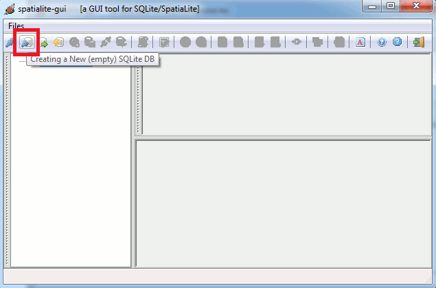
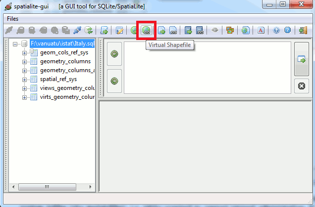
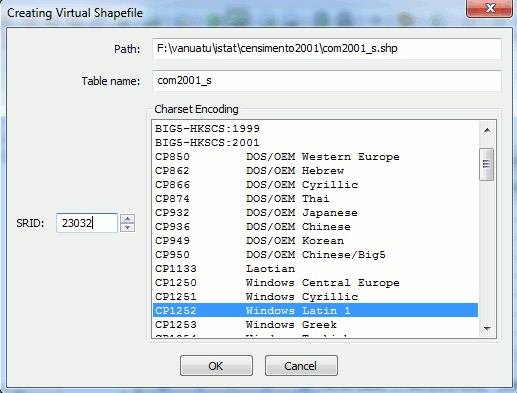
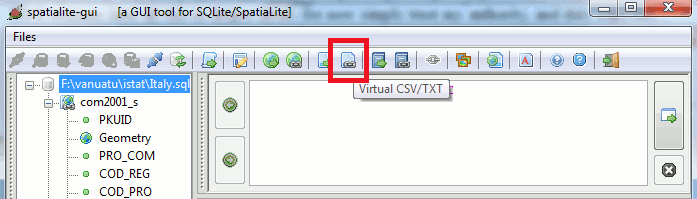
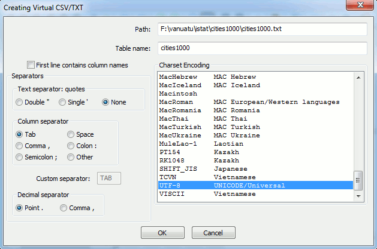

"HTML Tidy for HTML5 for Linux version 5.6.0" />
|
"font-size: 32pt">Building your first Spatial Database |
|
| 2011 January 28 |
| Next |
as you can easily notice, there is no DB currently connected.

so you'll now create / connect a new DB file: simply press the
corresponding button from the tool bar (a platform standard
file open dialog will soon appear) and set some file name.
Just for uniformity, please name this DB as
"Courier New, monospace">Italy.sqlite

As you can notice, immediately after creation the DB already
contains several tables: all them are system tables (aka
metatables), i.e. tables required to support internal
administration.
For now, simply ignoring them at all is the better choice to be
done (you are an absolute beginner, isn't ? be patient,
please).
Anyway, now you are connected to a valid DB, so you can now load
the first dataset: press the Virtual Shapefile button on the toolbar, and then select the
"Courier New, monospace">com2001_s file.

A dialog box will appear: please, select exactly the
above shown settings and confirm.
We'll examine later all this in deeper detail: for now simply trust
my authority, and duly copy the suggested values avoiding to
understand at all: that's black magic for now, and that's
all.
Once you've loaded the
"Courier New, monospace">com2001_s dataset you can
then continue (always using the same settings) and load both
prov2001_s and
reg2001_s files.
Your database will now look like this: using the left-sided
tree-view control is really easy checking tables (and columns
within each table).

You are now ready to complete the initial DB setup: press the
Virtual CSV/TXTe button on the toolbar, and then select the cities1000.txt
file.

A dialog box will appear: please, select exactly the
above shown settings and confirm.
This dialog box strongly resembles the one you've already used in
order to connect Virtual Shapefiles, but isn't identical. In this
case too we'll examine later any related detail.
All right: now you have three datasets ready to be queried: but
it's now time to explain better what we where doing in the above
steps.
| Next |
|
"CC-BY-SA logo" /> |
Author: Alessandro Furieri |
| This work is licensed under the
"http://creativecommons.org/licenses/by-sa/3.0/">Attribution-ShareAlike 3.0 Unported (CC BY-SA 3.0) license. |
|
|
|
|
| Permission is granted to copy, distribute and/or modify this
document under the terms of the Documentation License, Version 1.3 or any later version published by the Free Software Foundation; Texts. |
|